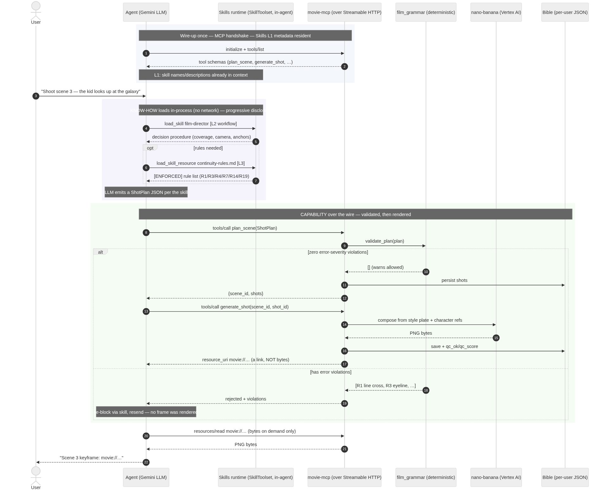
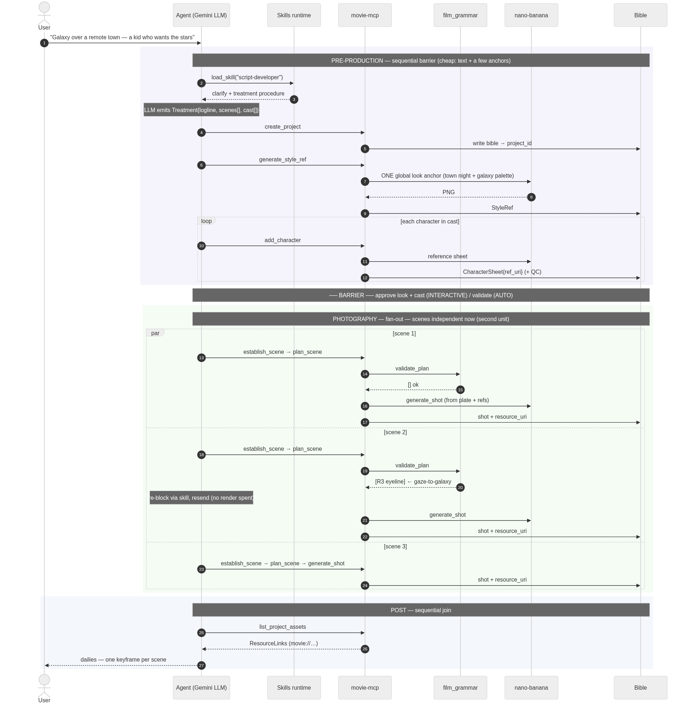
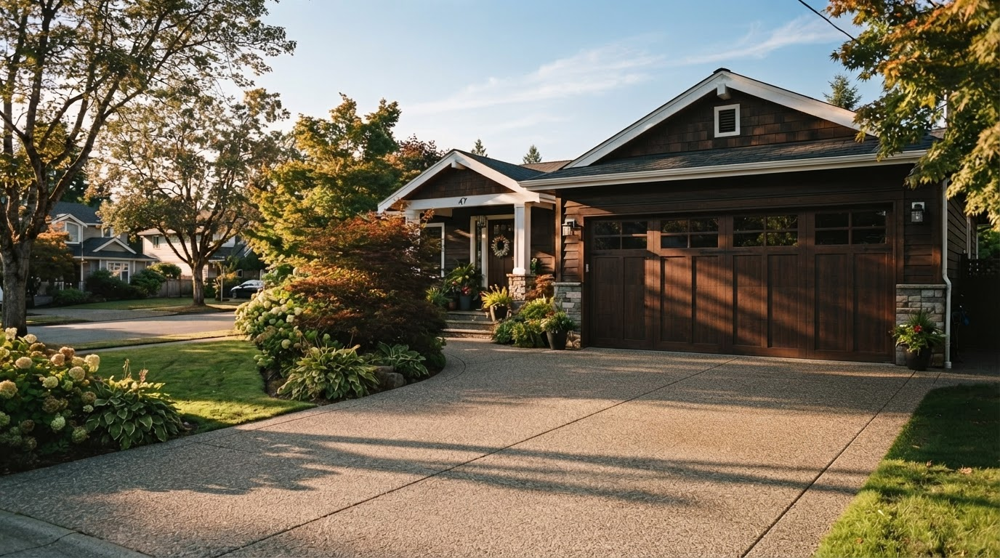
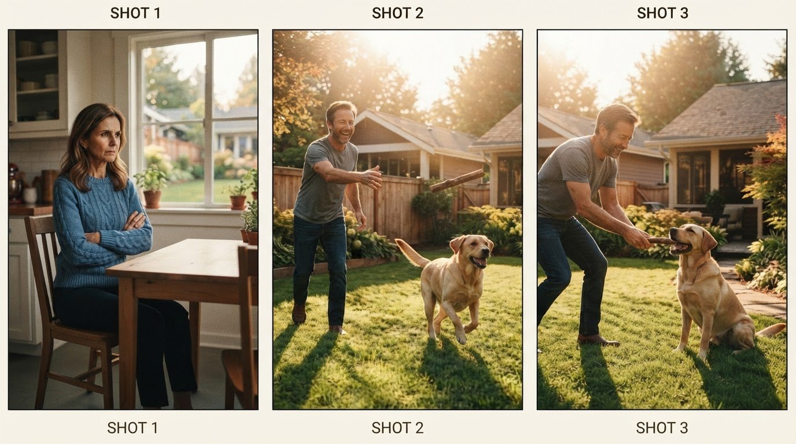
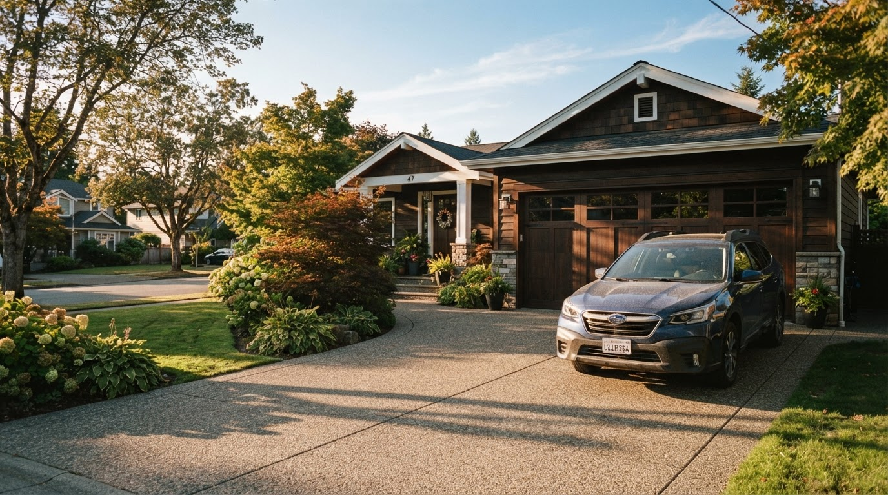
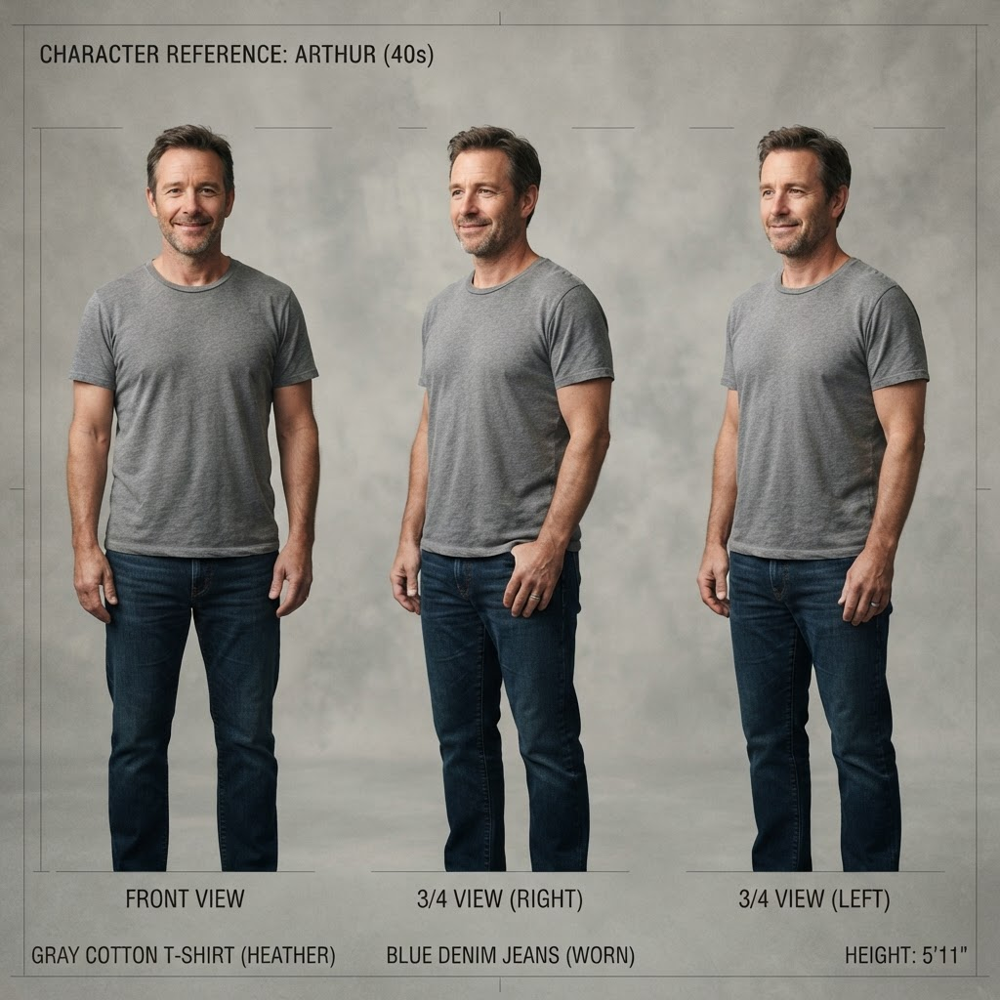

Part 2 of The Agentic Studio. The studio is a scheduler over stochastic renders; this is how the scheduler is built. One decision dominates the design, and it happens before any GPU-second is spent: a short, strictly ordered barrier — treatment, look, cast — that every downstream branch conditions on. Lock it and N scenes fan out in parallel, cheaply and safely. Skip it and you pay for the same inconsistency N times over. The pipeline is a real MCP server; every claim below is a mechanism, not a metaphor.
In an agent system, the expensive failures come from fanning out before you've locked the context every branch shares. The job of the architect is to find that shared context, produce it as a few cheap artifacts in a fixed order, gate it — and only then parallelize.
A film crew figured this out a century ago. Nobody shoots a single frame until the script is locked, the look is set, and the cast is fixed. That "pre-production" phase is cheap (it's mostly talk and a few reference images) and it is sequential on purpose. Principal photography — the expensive part — only begins once those decisions can no longer move underneath everyone.
That is exactly the shape of a well-built agent pipeline. And most teams get it backwards: they parallelize the expensive generative calls first because that's where the latency is, then spend their real budget re-doing work because each parallel branch made a different assumption about the shared context.
PRE-PRODUCTION (sequential barrier — cheap, gated)
idea → treatment → style anchor → full cast
│ everything below conditions on these
▼
PHOTOGRAPHY (fan-out — expensive, parallel, independent)
scene 1 ┐
scene 2 ├─ establish → plan → validate → render → QC (all at once)
scene 3 ┘
│
▼
POST (sequential join)
assemble → (video, score)
Three phases, and the boundaries aren't arbitrary — the film schedule tells you exactly where they go. Pre-production is a barrier: nothing downstream may start until it's done. Photography is a fan-out: once the look and cast are locked, scenes are independent and render concurrently (a "second unit"). Post is a join.
The barrier is a handful of cheap artifacts. A treatment is text. A style anchor is one image. A cast is a few reference images. Call it single-digit dollars and a few seconds.
The fan-out is where the money is: every scene, every shot, every re-render, every QC pass, times N scenes running in parallel. That's where 95% of the cost and latency live.
Here's the leverage. A defect introduced in the barrier is multiplied by the entire fan-out. If the style anchor is inconsistent, every one of the N parallel scenes inherits a look that doesn't match — and you re-render all N. If a character's reference sheet is ambiguous, every shot that character appears in comes back wrong. The cheapest artifact in the system is also the one with the largest blast radius.
So the rule writes itself:
Spend your reliability budget on the cheap, sequential, upstream artifacts — because they are the ones the expensive parallel work multiplies.
This is why pre-production is gated with a human approval (or a validator) and photography is not. You stop and confirm the four things that everything depends on. After that, you let it run.
This isn't about movies. Any agent workflow that fans out has a pre-production barrier hiding in it:
The discipline is identical: find the shared context, produce it cheaply and in order, gate it, then parallelize. If you can't name your barrier, you don't have an architecture — you have a prompt and some hope.
Everything below is real code from the pipeline. Two servers, one of them (movie-mcp) a
multi-module film-production app. The bible — a per-user, per-project JSON document — is the source
of truth; each stage reads the previous stage's artifact from it, never from chat history. That
detail matters: the handoff artifact, not the conversation, is the interface between stages.
Model the roles, and the agents, artifacts, and guardrails fall out of the org chart:
| Film role | Owns | Code | Artifact produced | Guardrail |
|---|---|---|---|---|
| Screenwriter | idea → script | script-developer skill (text only, cheap) |
Treatment{logline, scenes[], cast[]} |
— |
| Production designer | the "look" | generate_style_ref + establish_scene |
StyleRef, ScenePlate |
style anchor |
| Casting / char design | identity consistency | add_character |
CharacterSheet{ref_uri} |
QC vs refs |
| Director | blocking, shot choice | film-director skill |
ShotPlan |
— |
| Cinematographer | lens, framing, light | prompt fields + lens rule | shot params | film_grammar R19 |
| Script supervisor | eyelines, 180° line | film_grammar.validate_plan |
violations | R1/R3/R4/R7/R14 |
| Editor / QC | dailies, reshoots | film-editor skill + review_image |
Dailies{qc_score, issues} |
critic + QC_MAX_TRIES |
| Composer | score | musicgen |
audio | — |
Those rule codes in plain English: the 180° line (R1) keeps the camera on one side of the
imaginary line between two characters so they don't swap sides on a cut; an eyeline match (R3)
makes sure that when A looks at B, the next shot frames B from the direction A was looking;
establish-first (R7) means you show the room before you cut into close-ups of it; the 30° rule
(R4) avoids a jarring "jump cut" by moving the camera at least 30° between two shots of the same
subject. Each is something a human script supervisor watches for on set — and each reduces to an
arithmetic check on the shot-plan numbers, which is the whole reason film_grammar can enforce them.
Two of these mappings carry the whole design:
film_grammar is
pure logic, no I/O, and plan_scene persists shots only if there are zero error-severity
violations. A cheap deterministic gate before you ever spend a render.review_image scores per dimension against the
reference sheets, and on failure the pipeline regenerates with the critic's issues fed back
into the prompt, up to QC_MAX_TRIES (default 2) — like a shoot with a limited number of takes.That split — deterministic gate for rules, LLM critic for judgment — is the reliability backbone. Don't use a model for what a rule can check; don't use a rule for what needs taste.
The line producer's call sheet is logistics, not creativity. So the order is plain code; the craft inside each step is an LLM agent with a skill. Pseudocode of the real pipeline:
# PRE-PRODUCTION — sequential barrier. No LLM decides the ORDER.
treatment = await screenwriter(idea) # text, cheap
style = await production_designer(treatment.style) # ONE anchor — global look
cast = await parallel(add_character(c) for c in treatment.cast)
# ^ characters are independent of each other, but ALL of them gate photography
# ---- BARRIER ---- (human approval in INTERACTIVE mode; validator otherwise)
# PHOTOGRAPHY — fan-out. Scenes are independent now that look + cast are locked.
async def shoot(scene):
plate = await establish_scene(scene, style) # persistent, people-free set plate
plan = await director(scene, cast) # CRAFT: judgment
errs = film_grammar.validate_plan(plan) # CONTINUITY: deterministic gate
if errs:
plan = await director.fix(plan, errs) # re-block, don't reshoot
return await render_with_qc(plan, refs=[style, *cast]) # EDITOR: critic loop
dailies = await parallel(shoot(s) for s in treatment.scenes) # second unit
Note what's sequential and what's parallel. Casting fans out within the barrier (characters don't depend on each other) but the barrier as a whole still blocks photography (every scene needs the whole cast + the look). Scenes fan out after the barrier because they're genuinely independent. The concurrency graph isn't a guess — it's the dependency structure of the artifacts.
The pseudocode above hides the two things doing the work: screenwriter() and director() are not
functions — they're the LLM following a Skill, and plan_scene/generate_shot are MCP tool
calls over the wire. These are two completely different mechanisms, and understanding the
difference is the difference between a demo and a system.
One ADK agent registers both as tools:
from google.adk.skills import load_skill_from_dir
from google.adk.tools import skill_toolset
from google.adk.tools.mcp_tool import McpToolset, StreamableHTTPConnectionParams
skills = [load_skill_from_dir(SKILLS / n) # know-how, in-process
for n in ("script-developer", "film-director", "film-editor")]
movie_tools = McpToolset(connection_params=StreamableHTTPConnectionParams(
url=MCP_URL, timeout=180.0)) # capability, over HTTP
root_agent = Agent(name="movie_director", model="gemini-3.5-flash",
tools=[skill_toolset.SkillToolset(skills=skills), movie_tools])
SKILL.md body) loads only when the
task triggers it; L3 (bulky reference files like references/continuity-rules.md) loads only
when the workflow actually reaches for it.initialize → tools/list), then each
call is a tools/call. The 180s timeout is deliberate: image gen is ~12s and video is minutes,
well past ADK's 5s default.Here's a single scene flowing through both, end to end:

Read the diagram as three bands. The blue band happens once — the MCP handshake, and Skill L1
metadata that's always resident. The purple band is know-how loading inside the agent with no
network hop (L2, then L3 only if the rules are needed). The green band is the capability going
over the wire — and notice the deterministic gate sits inside the server, before any pixels:
plan_scene calls film_grammar.validate_plan and only a clean plan gets persisted and rendered. A
plan with an error-severity violation bounces back with the reasons, the agent re-blocks via the
skill, and no render was spent. Finally, bytes cross the wire only on the explicit
resources/read — the link-not-bytes rule the whole economics depends on.
The one sentence to keep: Skills answer "how should I do this?" in the agent's head; MCP answers "do this for me" in another process. They compose in a single agent, and the barrier from Part 1 is just this sequence run first for the treatment, look, and cast — the artifacts every later run of this same sequence conditions on.
Zoom out from the single scene. The pipeline is the same skill+MCP sequence run several times: a
few times in series to build the barrier (the shared artifacts), then N times in parallel
once the barrier is locked. The par band below is where the money is spent — and it's only safe to
run in parallel because everything above the barrier line already agreed on the look and the cast.

Three things this picture makes obvious that the prose can't:
StyleRef poisons all three parallel branches.par is only legal after the barrier. Scene 2 and scene 3 don't reference each other — they
reference the same StyleRef and cast produced above. Remove the barrier and par becomes a
race: three scenes inventing three looks.plan_scene fails validate_plan
(the kid's gaze doesn't match where the galaxy is framed — the eyeline-to-environment case), the
agent re-blocks via the skill, and no frame was rendered for the rejected plan. Deterministic
gate before the expensive call, per branch.Abstract enough. Here are real artifacts from a single run, in pipeline order — the same barrier-then-fan-out you just read, rendered.
From The Choice — the three stages of the pipeline, in one row: the barrier's people-free set plate, the per-scene fan-out (a 3-panel micro-shot), and the join (the animated scene):


1. The style anchor (generate_style_ref) — one image that fixes the world's look: palette,
light, texture. Everything downstream is composed to match it.

2. The character sheet (add_character) — the identity anchor, generated once and reused in every
shot the character appears in. This is what stops the "recast every scene" problem.

3. The set plate (establish_scene) — the people-free room, lit and dressed. It's rendered once
per scene and every shot in that scene is composed on top of it, so the space stays put.
4. The micro-shot (plan_scene → generate_shot) — the scene's coverage, validated for
continuity, then rendered. Notice the payoff of stages 1–3: the same two characters, the same
set, consistent screen direction, across three different framings.
That last frame is the whole architecture cashing out: identity from the sheet, world from the style anchor, space from the set plate, continuity from the validator — composed into shots that agree.
generate_style_ref produces one global look anchor, and every character and scene is composed
from it. This is the barrier doing its job: it's the shared context that keeps N parallel branches
in one visual world. Skip it — let each scene invent its own palette — and you've traded a barrier
for a merge conflict you can only resolve by re-rendering everything.
The same discipline shows up one level down. Keyframe composition edits in one character at a time (≤2 reference images per model call) starting from the styled empty set plate. Passing many references at once makes the model drop or invent characters. That's a barrier-within-a-shot: lock the plate, then add subjects sequentially against it.
None of this scales if the artifacts are heavy. They aren't — because tools return links, not
bytes. An image tool saves the PNG server-side and returns a tiny record with a resource_uri
(movie://user/project/name); pixels only cross into the model's context on an explicit
resources/read. So the barrier's artifacts are cheap to pass to every one of the N parallel
branches. Inline the base64 instead and you'd put megabytes into context on every call — the fan-out
would collapse under its own token weight. Context economics is what makes the topology viable.
The image model was the easy part. The architecture was recognizing that a film crew is already a multi-agent system — division of labor by craft, communicating through durable artifacts, gated at the one place it matters. The roles give you the agents. The handoff artifacts give you the interfaces. The production phases give you the concurrency graph. And the pre-production barrier — cheap, sequential, gated — gives you the one decision that determines whether the expensive part runs once or N times.
Model the crew, not the movie. Then find your barrier before you fan out.
Next: Part 3 — Consistency Is the Product — the invariants that turn these fan-out artifacts into a film that agrees with itself, and the unit economics that follow. New here? Start from Part 1 — the thesis or the foundations: MCP and Skills.